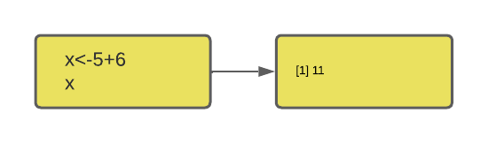
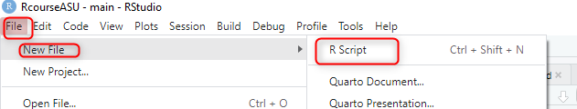
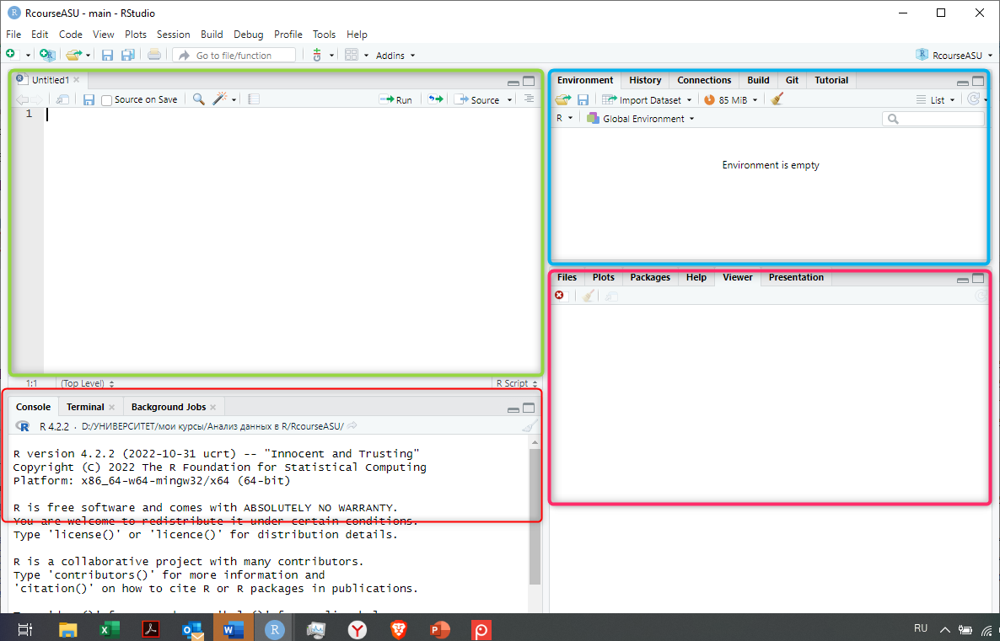
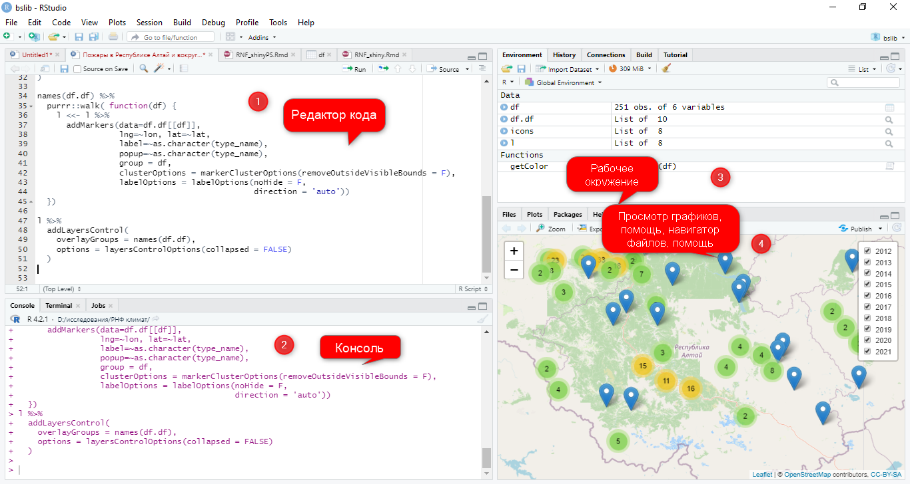
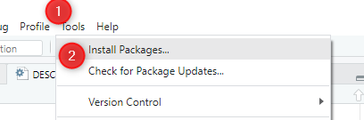

Что такое R?
R – это язык программирования и свободная программная среда для статистической обработки и визуализации данных.
Несмотря на наличие огромного количества языков программирования и различных программ для статистической обработки данных, R в течение двух десятилетий остается популярным языком и средой обработки и анализа данных для специалистов из разных областей знания.
Позиции языка R среди других языков программирования довольно высоки. Так, по данным индекса Tiobe за 2021 год, R занимает 12-е место в мире:

Однако, прежде всего, это язык, который используют ученые и управленцы для анализа реальных данных и разработки научно обоснованных систем принятия решений, поэтому место в общем рейтинге не так высоко. Если посмотреть сферы использования, то на первом месте - академическая среда, на втором - сфера здравоохранения, на третьем - правительственные учреждения.

R используют банки и маркетинговые агентства, технические компании и информационные гиганты для разных целей - от обработки данных до прогнозирования и представления интерактивной инфографики.
Вот только небольшой список тех компаний, которые используют R в своей деятельности.

Каковы преимущества R?
Их довольно много:
- Возможности для статистической обработки, от простых функций до сложных моделей.
Почти все новое, что появляется в области статистики, можно найти в одной из библиотек R. Например, ANZ банк использует R для моделирования невыплат по ипотечному кредитованию, а The Bank Of America применяет R для формирования финансовой отчетности
- Это язык программирования с открытым исходным кодом (Open-source)
Что это значит? Это значит, что, во-первых, все написанное на R открыто для изучения и критики, а, во-вторых, каждый может внести вклад в его развитие и улучшение путем создания новых библиотек и новых функций для решения различных задач.
- Поддержка сообщества (Community)
У R - более 2 миллионов пользователей по всему миру, сообщество пользователей R не только внушительное по размеру, но и очень активное. Каким бы ни был ваш проект - учебным или крупномасштабным, всегда найдется тот, кто поможет разобраться в коде и принять правильное решение. Вы тоже можете найти себе единомышленников и подключаться к другим проектам.
Некоторые полезные ссылки:
- https://community.rstudio.com/
- https://www.r-bloggers.com/
- https://stackoverflow.com/questions/tagged/r
- https://rweekly.org/ https://www.reddit.com/r/Rlanguage/
- https://r.awesome-programming.com/en/awesome/r-language-02/community
Специально для девушек (сообщество созанно для обеспечения гендерного равенства среди разработчиков и поддержки женщин в сообществе пользователей R): https://rladies.org/
- Огромная коллекция библиотек и полезных функций, позволяющих расширить возможности базового языка
Самые авторитетные хранятся в CRAN (Comprehensive R Archive Network), их более 10 тысяч, однако, каждый может создать свою библиотеку и разместить ее, например, на github для тестирования и доработки.

Примеры библиотек:
- для обработки данных и всевозможных манипуляций с ними
(
dplyr,tidyr) - работа с большими данными (
sparklyr) - глубокое обучение (
keras,TensorFlow) - машинное обучение (
H2O) - визуализация данных (
ggplot2) - создание отчетов, итерактивная графика и обучение
(
Rmarkdown,shiny).
- Совместимость с другими языками программирования
Большинство функций и библиотек написаны на самом языке R. Однако, для сложных вычислительных задач, могут использоваться и другие языки, такие как C, C++, FORTRAN. Для манипуляций с объектами, возможно использование других языков - .NET, Java, Python. Иными словами, возможности программирования становятся практически безграничными.
- Создание привлекательных визуализаций
В современном мире анализ данных невозможен без качественной
визуализации, особенно если его результаты планируется использовать в
сфере политики и бизнеса. R является одним из лучших инструментов для
создания качественной графики, и такие библиотеки как
ggplot2, plotly, ggvis помогут
создать очень детализированные и привлекательные визуализации.

- Интеграция с Hadoop и анализ больших данных
Если перед вами стоит задача анализа больших данных, то с такими
библиотеками как rmr, rhdfs,
rhbase, RHIVE, RHIPE и
Rhadoop возможно интегрировать R и Hadoop (проект фонда
Apache Software Foundation для разработки и выполнения распределённых
вычислений для работы с большими данными).
Возможности по хранению данных Hadoop и вычислительные достоинства R используют многие в качестве оптимального решения для анализа больших данных. Например, компания Форд использует R и Hadoop для обработки данных обратной связи с потребителями, что позволяет им улучшить дизайн и обосновывать бизнес решения.

- Создание интерактивных веб-приложений
С помощью R и библиотеки shiny можно создавать интерактивные приложения, с помощью которых пользователи (ученики, заказчики, журналисты и пр.) могут познакомиться с вашими данными, провести какие-то виды анализа, сделать визуализацию, возможно изучить какие-то закономерности (часто используются как обучающий инструмент). Эти приложения можно хранить на сервере Shiny или в другом доступном месте.

Примеры:
- https://shiny.rstudio.com/gallery/covid19-tracker.html
- https://shiny.rstudio.com/gallery/fifa-births.html
- https://shiny.rstudio.com/gallery/india-blood-banks.html
- Совместимость с другими платформами
R может работать с любой конфигурацией оборудования и поддерживает различные операционные системы, независимо от окружения выдает предсказуемые и однозначные результаты.
- Возможность запуска кода без компилирования
R относится к интерпретируемым языкам, что означает, что ему не требуется компилятор для того, чтобы программа заработала. Иными словами, все команды, которые мы вводим, сразу же выполняются, без дополнительного компилирования (сборки), как в других языках.

Кроме этих преимуществ есть и много других, о которых мы узнаем в процессе изучения курса.

Вопросы для самопроверки
Немного истории
R был создан профессорами Россом Ихака и Робертом Джентельменом (Ross Ihaka и Robert Gentleman) в 1992 году, сначала как язык программирования для обучения студентов статистике в университете Окленда (Новая Зеландия). Авторы вдохновлялись при создании языком S, используемым в лаборатории Bell, и ради шутки назвали язык R - по первым буквам собственных имен.
В июне 1995 года, статистик Мартин Махлер убедил Ихаку и Джентельмена опубликовать R как язык со свободным исходным кодом под публичной лицензией GNU. Первая официальная версия была выпущена 29 февраля 2000 года.
Чуть ранее, в 1997 году Куртом Хорником и Фрицем Лейшем была основана Сеть для архивирования кода R (CRAN, The Comprehensive R Archive Network), цель которой заключалась в хранении исходного кода, выполняемых файлов, документации и библиотек, создаваемых пользователями. На момент декабря 2022 года CRAN имел 103 зеркальных сервера и 18 976 библиотек.
Команда разработчиков (R Core Team) также была основана в 1997 году для дальнейшего развития языка. Сейчас в ней состоят ведующие разработчики, статистики, специалисты по компьютерным наукам, всего более 20 человек. В апреле 2003 года для развития проекта была создана некоммерческая организация R Foundation. Цель фонда заключается в предоставлении технической поддержки и коммуникации с создателями R, хранении и управлении технической документацией и интеллектуальной собственностью.
Создатели R:
Роберт Джентельмен

Росс Ихака:

Кое-что еще о разработчиках R
Кроме основной команды, в сообществе R выделяются талантливые программисты, которые разрабатывают библиотеки, без преувеличения производящие революцию в обработке и анализе данных. Это настоящие гуру, которых очень уважают в исследовательском сообществе, их имена знают все, кто работает в R. Ну, или почти все…
ТОП-3 (по моему личному мнению)
Хэдли Уикхэм (Hadley Wickham) - программист из Новой Зеландии, главный научный сотрудник в компании RStudio. Без преувеличения самый известнй, очень трудолюбивый и плодотворный разработчик R, автор почти 100 (!) библиотек, в том числе таких мегапопулярных как
ggplot,dplyr,tidyverse,devtoolsи других. Этими библиотеками воспользовались более 825 тыс. человек.
Дирк Эддельбуэттель (Dirk Eddelbuettel) - канадский ученый в области статистики, программист и исследователь, второй в нашем списке лучших разработчиков библиотек для R. Принял участие в создании более 60 библиотек, наиболее популярными среди которых является
Rcpp, позволяющая интегрировать R с другим не менее популярным языком C++, а такжеRPostgreSQL, предоставляющая интерфейс для работы с системой баз данных PostgreSQL. Работает в Иллинойском университете в Урбане-Шампейне.
Ихуэй Се (Yihui Xie) - еще один плодовитый разрботчик, создавший более 40 библиотек, загруженных более 130 тыс. раз. Его большая заслуга в том, что разработал инструменты для создания интерактивных приложений (
knitr,rmarkdown,shinyиhtmlwidgets- его детища, и мы тоже с ними познакомимся на следующих занятиях). Yihui Xie также поддерживает системуbookdown, которую можно использовать для написания книг и отчетных документов с помощью R Markdown. Инженер-программист компании RStudio.
Вопросы для самопроверки
Установка R и RStudio
Прежде, чем начать работать с R нам нужно установить его себе на компьютер. Для этого необходимо перейти по ссылке и выбрать версию, подходящую для вашей операционной системы (ссылка ниже ведет на версию для Windows): https://cran.r-project.org/bin/windows/base/
Вместе с R устанавливается небольшая консоль, в которой можно набирать команды на R, но работать в ней не очень удобно, поэтому большинство пользователей предпочитает работать со специальным интерфейсом, или интегрированной средой разработки. Для языка R создано довольно много таких сред, однако, наиболее популярной является RStudio.
Это бесплатная программа, скачать которую можно по ссылке.
https://www.rstudio.com/products/rstudio/
Эти шаги не очень трудны и не потребуют каких-то особых навыков, но на всякий случай, можно обратиться к однму из обучающих видео:
Как установить R:
Как установить RStudio:
В комьютерных классах устанавливать ничего не нужно, эти инструкции для домашнего использования.
Начало работы в RStudio
После первого запуска RStudio вы, скорее всего, увидите вот такую картину:

Основное окно RStudio будет состоять из трех частей (экранов).
Синим цветом обозначена консоль - здесь можно писать код, и здесь же будут появляться результаты его выполнения, а также различные сообщения, с помощью которых R “общается” с пользователями.
Зеленый экран - рабочее окружение - здесь хранятся создаваемые и загружаемые объекты - данные (вектора, датафреймы и пр.), пользовательские функции и некоторые другие объекты.
Красный экран - окно просмотра. В отдельных вкладках можно посмотреть, какие файлы и папки есть в рабочей директории, какие библиотеки установлены, можно запросить помощь или посмотреть графики (в процессе анализа).
Это только в первый раз окна всего три.
Выберите в меню File - New File - R Script:

Откроется новый файл, и окон станет четыре:

В этом новом окне можно писать код и комментарии, сохранять его как отдельный файл с расширением .R, который можно запускать повторно, что очень удобно и позволяет значительно сохранить время при рутинной обработке данных. Очень часто в ходе обработки и анализа данных приходится осуществлять повторяющиеся действия, и скрипт поможет ускорить процесс обработки. В этом состоит основное отличие от консоли, где код можно запустить только однажды.

Как установить нужную библиотеку?
Как мы выяснили, базовый язык R в настоящее время используется наряду с многочисленными функциями и библиотеками, разрабатываемыми коллективами ученых и разработчиками из разных стран мира, включая Россию.
Устанавливать новые библиотеки нам придется практически на каждом занятии, поэтому лучше научиться делать это сразу.
Эти библиотеки хранятся в основном в двух местах:
- CRAN
- Github - нечто вроде социальной сети для программистов, где все друг друга знают, создают совместные проекты и делятся кодом.
Как установить библиотеку с помощью CRAN
Чтобы скачать нужную библиотеку (конечно, нужно знать ее название, иначе ничего не получится) с помощью CRAN, проще всего воспользоваться меню RStudio:

Затем в окне Packages необходимо ввести имя нужной библиотеки и нажать на кнопку Install.

Как установить библиотеку из Github
Не все библиотеки доступны на CRAN, так как эта процедура достаточно сложная и строгая, предполагает несколько проверок (кода, сопроводительной документации). Достаточно частая практика, когда библиотека еще не подана для регистрации на CRAN, разработчики помещают ее на GitHub, откуда ее можно скачать и использовать по назначению. Это позволяет разработчикам получить обратную связь, устранять возможные ошибки, улучшать код.
Пара слов о библиотеке/пакетах, которые мы тут устанавливаем
Мы называем “библиотеку” “библиотекой” и подразумеваем под ней набор каких-то полезных утилит, потому что так принято в русскоязычном сегменте Интернета, посвященном программированию.
Однако, по-английски библиотека называется package,
то есть “пакет”, в котором “упакованы” функции, сопровождающие документы
и иногда готовые данные, а вот функция, которая этот пакет запускает -
library() - то есть собственно библиотека, такие вот
языковый казус. Об этом стоит помнить и слова эти не путать.
Чтобы установить нужную библиотеку из GitHub, нам понадобится функция
install_github(), в которой мы должны указать имя
разработчика и название библиотеки. Однако, чтобы выполнить эту функцию,
нужна дополнительная библиотека devtools. Установить ее
можно через CRAN с помощью описанного выше способа. А уже затем,
загрузив ее, установить нужную нам библиотеку (получается сложновато,
зато мы сразу научимся нужным действиям, потом мы доведем их до
автоматизма):
library (devtools)
install_github("DeveloperName/PackageName")Первые простые действия в R
Синтаксис R очень прост, и мы можем овладеть его основами буквально за несколько действий.
Например, мы можем вводить в R какой-то текст - обязательно в кавычках или последовательность цифр, а также использовать R для простых арифметических действий.
Упражнение: напишите любое предложение в кавычках и запустите код.
Упражнение: напишите в окне пример 3+7 и запустите код.
В отличие от многих языков, для того, чтобы вывести на экран
введенные данные в R необязательно использовать функцию
print(). Однако, эта функция есть и ее можно
использовать:
print("Привет, мир!")Достаточно часто к коду прилагаются комментарии, чтобы сам разработчик или тот, кто будет использовать код в дальнейшем, знал, для чего нужны те или иные действия.
Как и во многих других языках, комментирование в R осуществляется с помощью знака #:
#Это комментарий
print("Привет, мир!")Создание переменных
Когда мы анализируем результаты научных исследований, мы постоянно сталкиваемся с какими-то переменными. Имя опыт работы в различных программах статистической обработки данных, например SPSS, и обрабатывая результаты социологических исследований, мы привыкли считать переменными вопросы анкеты, если они имеют один вариант ответа или отдельные варианты ответа для вопросов с множественным выбором, ведь именно в такой логике создается шаблон массива данных.
Не лишним будет вспомнить, чем является переменная в статистике и программировании, поскольку от этого будет зависеть то, как мы будем работать с переменными на языке R.
В статистике под переменной понимается величина, которая может меняться или колебаться, в отличие от константы, которая сохраняет данное значение. То есть оценки учеников в классе - это переменная, если они разные, и константа - если все отличники и учатся на одни пятерки.
В программировании же под переменной понимается (англ. variable) “поименованная или адресуемая иным способом область памяти, которую можно использовать для доступа к данным”. То есть переменная - это некоторое хранилище, куда мы складываем какие-то данные, которые потом используем. Это как мешок (кейс, конверт и пр.), куда мы кладем что-то до того момента, пока нам это понадобится.
В отличие от некоторых языков, переменные в R являются динамическими, то есть их не нужно объявлять заранее и присваивать им какой-то тип данных. Это означает, что переменная создается в тот момент, когда мы присваиваем ей какое-то значение, и тип переменной присваивается по этим значениям. Например, если мы создали переменную, в которой содержатся числа, то и сама переменная будет числовой, если в ней содержатся слова - то строковой и т. д.
Для декларации и инициализации переменных в R есть три основных способа:
- С помощью знака равенства - данные копируются справа налево
- С помощью знака “меньше” - данные копируются справа налево
- С помощью знака “больше” - данные копируются слева направо
Общие правила таковы:
# Создание переменной с помощью знака равенства
имя_переменной = значение
# Создание переменной с помощью знака "меньше"
имя_переменной <- значение
# Создание переменной с помощью знака "больше"
значение -> имя_переменнойОднако, чаще всего встречается второй вариант, когда переменная создается с помощью знака (<-).
Давайте попробуем создать несколько переменных:
fruit<-"apple"
fruitprice<-5000
priceage=35
age2023-> year
yearВсе очень просто. Заметим, что для того, чтобы вызвать переменную, не нужно использовать команду print() или какую-то другую функцию, достаточно просто набрать имя переменной и выполнить код.
Имена переменных
Имя переменной может быть коротким, как x или y или более длинным и содержать ее описание (age, price, index).
Правила для имен в R таковы:
- имя должно начинаться с буквы и может быть комбинацией букв, цифр, точек (.) и знаков “нижнего подчеркивания” (_)
- если имя переменной начинается с точки (.), то за ней не должно быть цифры
- имя переменной не может начинаться с цифры или нижнего подчеркивания (_)
- регистр имеет значение, (age, Age и AGE это разные переменные)
- зарезервированные слова (в программировании - особые слова, имеющие специальные значения) не могут быть использованы в качестве имен (TRUE, FALSE, NULL, if…)
# Примеры корректных имен переменных
myvar <- "John"
my_var <- "John"
myVar <- "John"
MYVAR <- "John"
myvar2 <- "John"
.myvar <- "John"
# Примеры неправильных имен переменных
2myvar <- "John"
my-var <- "John"
my var <- "John"
_my_var <- "John"
my_v@ar <- "John"
TRUE <- "John"Конкатенация (соединение)
В случае с текстовыми переменными мы можем соединить два или более
элемента с помощью функции paste() и знака запятой:
text <- "АГУ"
paste("Самый лучший университет в мире - ", text)Мы можем также соединить несколько переменных друг с другом:
text1 <- "Барнаул -"
text2 <- "столица мира"
paste(text1, text2)Если в наших переменных хранятся числа, то для их соединения можно просто использовать любые математические операторы, например сложение:
num1 <- 5
num2 <- 10
num1 + num2Несколько переменных
В R мы можем одновременно создать несколько переменных и присвоить им одно и то же значение.
# Это можно сделать одной строкой
var1 <- var2 <- var3 <- 5var1 <- var2 <- var3 <- 5
var1
var2
var3Самостоятельная работа
- Создайте переменную country и присвойте ей значение Russia.
country<-"Russia"- Создайте переменную maxSpeed и присвойте ей значение 120.
maxSpeed<-120- Используйте функцию, чтобы корректно соединить текст “Знание -” и переменную text, чтобы получилось связное предложение.
text<-"сила"
____("Знание -", text)text<-"сила"
paste("Знание -", text)- Отобразите сумму 5 + 10, используя две переменные: x и y.
x ____ _____
y<-10
____ ____ yx<-5
y<-10
x+y- Присвойте значение “Orange” трем переменным - fruit1, fruit2 и fruit3 с помощью одной строки кода:
fruit1<-fruit2<-fruit3<-"Orange"